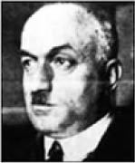

Ahmet Haşim
Ahmet Haşim (1885-1933)
“Ağır ağır çıkacaksın bu merdivenlerden, Eteklerinde güneş rengi bir yığın yaprak, Ve bir zaman bakacaksın semâya ağlayarak...”
1885 Bağdat doğumlu olan Ahmet Haşim, 1933 yılında İstanbul’da yaşama gözlerini kapamıştır.
O dönem Mekteb-i Sultanî olarak bilinen Galatasaray Lisesi’ni bitirdikten sonra devlet kademelerinde öğretim görevliliği başta olmak üzere çeşitli görevlerde çalışmıştır. Modern Türk şiiri üzerinde önemli etkisi olan Ahmet Haşim, Göl Saatleri (1921) ve Piyâle (1926) adlı şiir kitaplarıyla empresyonizm (izlenimcilik) ve sembolizm akımlarını temsil etmiştir. Şiirin yanı sıra diğer alanlarda da önemli eserler veren Haşim, Bize Göre (1928), Gurebâhâne-i Lakla-kan (1928), Frankfurt Seyahatnamesi (1933) ile Türk edebiyatının modern yüzünü yansıtmıştır.
Galatasaray Lisesi’nde okurken öğretmenleri arasında Tevfik Fikret de bulunuyordu. Tevfik Fikret’in etkisinde kalan ilk şiirleri çeşitli dergilerde yayımlanır. Fecr-i Ati topluluğuna katıldıktan sonra Servet-i Fünun, Resimli Kitap, Rebap ve son olarak da Dergâh adlı dergilerde yazmıştır.
Bu dönemde ünü yayılan şairden bir yazı alabilmek için başka bir derginin sahipleri Ahmet Haşim’i ziyaret ederler. Oldukça verimli döneminde olan Haşim, daha önce yazdığı bir yazıyı dergi sahiplerine uzatır.
Bundan oldukça hoşlanan dergi sahipleri, sevinçle Haşim’in ellerine sarılarak, “Çok teşekkür ederiz üstat” derler. “Sizin yazınızla dergimiz daha da güçlenecek, bizi mahcup ettiniz.”
Ahmet Haşim sakin bir şekilde yerinden doğrularak “Koskoca dergi sahiplerini mahcup etmek istemem, bunun için yazının parasını öderseniz ödeşmiş oluruz!” der.
Ahmet Haşim, Mehmet Fuat, Refik Halit, Yakup Kadri gibi Fecr-i Ati topluluğunun yazarlarından olan Şahabet-tin Süleyman bir gün Ahmet Haşim’e, “Üç gündür aklımda bir fikirle dolaşıyorum” der. Şahabettin Süleyman’ın fikir üretimindeki kısırlığını yermek için ünlü şair şöyle cevap verir:
“Sen büyük günah işlemişsin yahu! Zavallı fikir tek başına ne kadar da sıkılmıştır günlerdir kafanın içinde!”
Böbrek rahatsızlığının tedavisi için 1932 yılında Frankfurt’a gider. Dönüşünde onu ziyarete gelen uzaktan bir tanıdığı uzun süre oturarak ve çok konuşarak ünlü şairin canını fazlasıyla sıkar. Adam susmak ve gitmek bilmez.
Bir de damdan düşer gibi şunu sorar Ahmet Haşim’e: “Eee dostum, bir vasiyetin var mı?”
Ahmet Haşim, “Var” der, “Eğer bir hastanın yanına gidersen bu kadar fazla oturma, bu kadar çok konuşma!”
Frankfurt’tan tam olarak iyileşemeden dönen Haşim, perhizine de dikkat etmediğinden sağlığını tehlikeye atar. Yemeğe düşkünlüğüyle tanınan ünlü şair, bir gün lokantada yemek yedikten sonra lokanta sahibini çağırarak “Lokantanızda temizliğe oldukça önem veriyor olmalısınız” der.
Lokanta sahibi, “Teşekkür ederim efendim” diye böbürlenir. “Siz de çok dikkatlisiniz, bunu nereden anladınız?”
Ahmet Haşim şöyle cevap verir: “Tüm yemeklerinizin sabun kokmasından!”
Yusuf Ziya Ortaç anlatıyor:
“Onu bir gün, evinden alıp Alman Hastanesi’ne götürdük. Yatağından çıkmış, giyinmeye gitmişti. Yarım saat geçmiş, gelmemişti bir türlü. Merak ile odaları dolaştık, yok. Bir de baktık ki mutfakta: Akşamdan kalma domatesli pilav tenceresini kaşıklıyor!
‘Haşim... Ne yapıyorsun Haşim?’ diye üstüne atılınca mahzun mahzun boynunu bükmüştü:
‘Bırak Yusuf Ziya, nasıl olsa hastanede tuzsuz kabak haşlamasından başka bir şey yedirmeyecekler!’
Sonra acı acı gülmüştü:
‘Ve nasıl olsa öleceğim, bari ağız tadıyla öleyim!’
Doğru çıktı dediği. Bir aylık perhizden ve tedaviden sonra evine daha yorgun, daha perişan döndü. İlk işi, kendisine şefkatle bakan tek kadınla evlenmek oldu. Ölüm döşeğinde kıyılan bu nikâhtan sonra:
‘Ooooh, dedi, şimdi bahtiyarım, ben de arkamda gözleri yaşlı bir dul bırakacağım!’ “
Ahmet Haşim’den...Ay
Bütün gün kırlarda, deniz kenarlarında dolaştık. Güneş, hayale izin vermeyecek tarzda her şeyi açık ve berrak gösterdiği için, yalnız gözlerimizle yaşadık ve hiç eğlenmedik.
Ağaçların tozlu yapraklarını, kayalar üzerinde durup soluyan kertenkeleleri, denizin kirli suları altındaki cam kırıklarını, paslı tenekeleri, eski pabuç cesetlerini seyretmenin ne kadar çabuk ruha bıkkınlık verdiğini denemeyen var mı?
Güneşli kırlarda geçen bir gezinti gününden sonra, akşamüstü eve ümitsiz dönmenin mümkün olmadığını deneyimlerimle bilirim. Güneş, bütün gün, insana doğru fakat acı şeyler söyleyen bir arkadaştır. Onun ışığında eğlenmenin ve mutlu olmanın hiç olanağı var mı?
Nihayet akşam oldu. Karanlık bastı. Karşı karşıya oturmuş iki insan, artık yüzlerimizi görmüyor, yalnız seslerimizi duyuyorduk. Birden, arkamızda, garip bir fısıltıyı andıran bir hışırtı duyar gibi olduk. Başımızı çevirdik: İki büyük fıstık ağacı arkasından kırmızı bir ay, sanki yapraklara sürünerek yükseliyordu. Birden etrafımızda dünyanın bütün manzaraları değişti. Sanki Japonyalı bir ressamın siyah mürekkeple çizdiği belirsiz ve tamamlanmış bir âlem içinde idik. Artık her şeyi açıkça görmek ıstırabından kurtulmuştuk. Etrafımızda gündüzün bütün uyuz ağaçları yerine zengin bir orman oluşmuştu. Karşıda yemek yiyen yoksul ailenin kirli kızları, yüzlerine vuran ay ışığı içinde birer süslü hayal olmuşlardı. Denizin bulanık suları boşalmış ve onun yerine şimdi sahilin üzerinde ışıktan bir sıvı sallanıp şarkı söylüyordu. Dünyanın güzelliğinden korkmaya başlamıştık. Çünkü aydan akan büyünün mutluluğuyla ruhlarımız çatlayacak kadar dolmuştu.
Ay! Ay! Yalancı ay! Zekâdan harap olanları dinlendiren hayal gibi, güneşten bunalanları da avutan sensin!